Votre Mac, net partout
Une vidéo en couleurs pleines et un écran sur mesure, sur iPad, iPhone et iPhone Duo. Comme si vous étiez assis devant votre Mac.

4,99 €, à payer une seule fois. Aucun compte, aucune publicité.
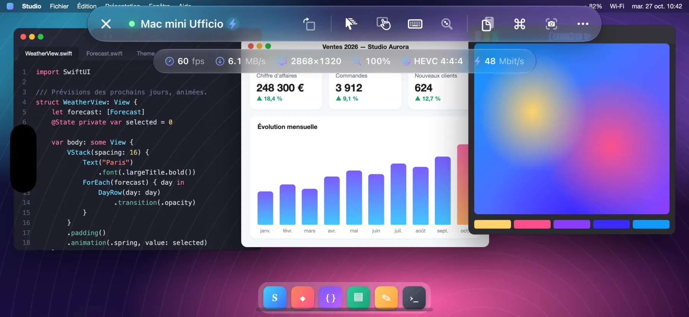
- 60 fps
- HEVC 4:4:4
- Retina
Comment ça marche
Open Remote PRO se connecte au Partage d'écran intégré à macOS, celui qu'utilise Apple Remote Desktop.
- Rien à installer sur le Mac
- Aucun compte à créer
- Aucune donnée ne passe par des serveurs tiers
Couleurs pleines, fluide à 60 fps
Vidéo HEVC 4:4:4 en couleurs pleines, décodée par le matériel : texte aussi net que sur l'écran du Mac, dégradés et photos sans franges colorées. Faites défiler, déplacez des fenêtres, regardez une vidéo : fluide jusqu'à 60 fps, avec une faible latence.
Si le Mac ne propose pas le mode vidéo, l'app passe d'elle-même aux encodages VNC classiques.
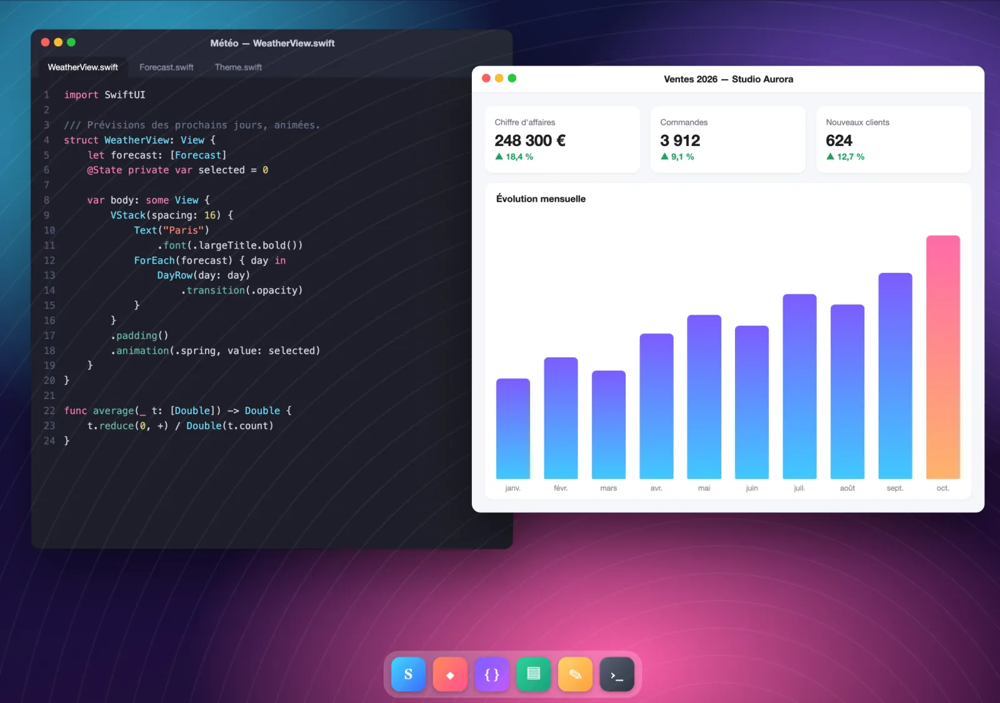
L'écran s'adapte à vous
Le Mac crée un moniteur virtuel Retina exactement à la taille de votre écran : pas de bandes noires, pas de texte minuscule. Vous tournez l'appareil, utilisez Split View ou Stage Manager, dépliez l'iPhone Duo : le moniteur se redimensionne tout seul.
- Clavier ouvert, à vous de choisir : faites glisser deux doigts pour voir la partie masquée, ou réduisez l'écran du Mac à la zone visible.
- Sur iPhone, un bouton fait pivoter l'écran même avec le verrouillage de la rotation activé.
- Mac avec plusieurs écrans : passez de l'un à l'autre d'un toucher ou affichez-les tous ensemble.
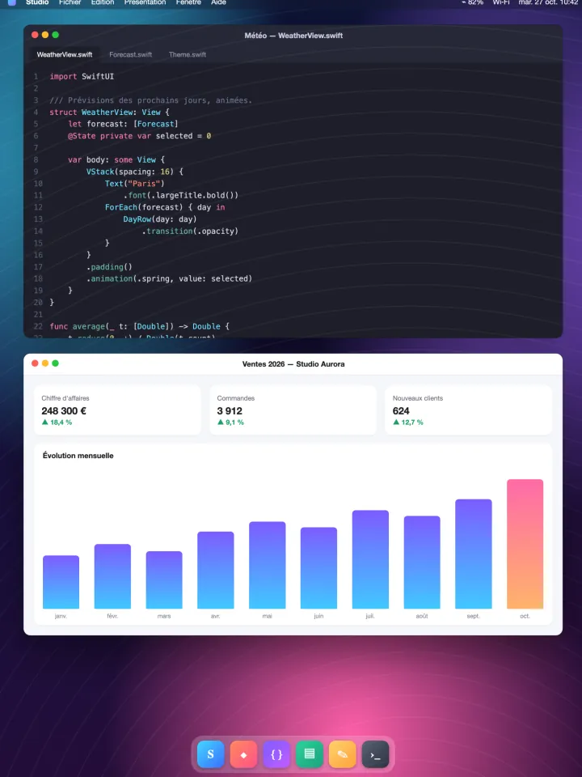
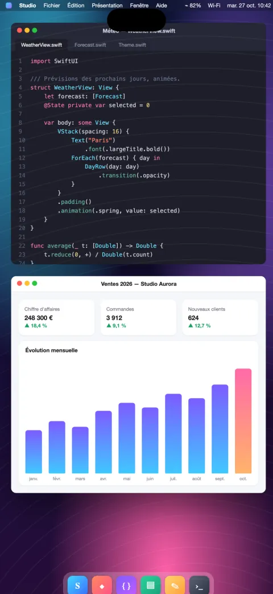
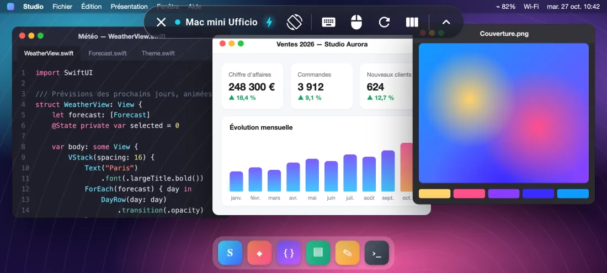
Optimisée pour iPhone Duo
Dépliez le téléphone et l'écran du Mac s'agrandit avec lui, repliez-le et il s'adapte à l'écran externe.
Plié, le Mac s'adapte à l'écran externe. Déplié, il devient un vrai bureau de 7,6 pouces, avec l'espace d'un portable.
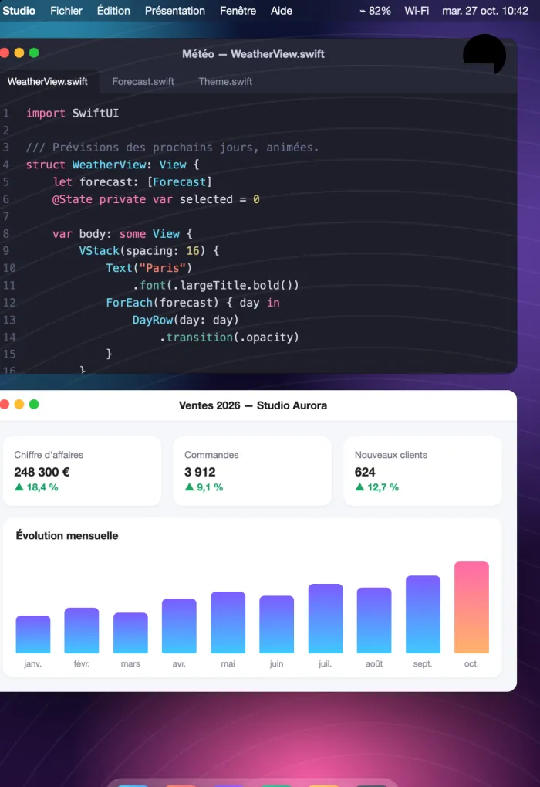
- Le moniteur virtuel du Mac change de taille dès que vous pliez ou dépliez le téléphone : pas de reconnexion, pas de bandes noires.
- La barre de commandes se réorganise seule entre l'écran externe et l'écran interne.
- Un bouton pour faire pivoter l'écran et une suggestion de rotation quand vous tournez le téléphone.
Souris, trackpad et clavier
Prise en charge complète des souris, trackpads et claviers Bluetooth et USB, y compris Magic Keyboard, Magic Trackpad et Magic Mouse.
- Un pointeur qui se déplace et survole les éléments, comme sur le Mac.
- Clic gauche et clic droit.
- Défilement à deux doigts sur le trackpad et avec la molette de la souris, continu ou cran par cran.
- Clavier physique avec la bonne disposition, lettres accentuées et symboles compris.
- Touches de modification ⌘ ⌥ ⌃ ⇧.
Dans l'app pour iPad et iPhone.
Essayez : appuyez sur ⌘, ⌥, ⌃ ou ⇧ sur votre clavier.
Vos Mac en un coup d'œil
Pensée pour ceux qui gèrent plusieurs Mac, à la maison, au studio ou au bureau.
- Vous utilisez Apple Remote Desktop ? Importez en un instant la liste des ordinateurs exportée depuis Remote Desktop.
- Des fiches avec la dernière image de chaque Mac et son état en temps réel : disponible ou injoignable.
- Détection automatique des Mac sur le réseau local et connexion rapide par adresse.
- Gestion à distance via SSH : matériel, système et disques, apps installées, verrouillage de l'écran, suspension d'activité, redémarrage et extinction, avec vérification de l'identité du Mac.
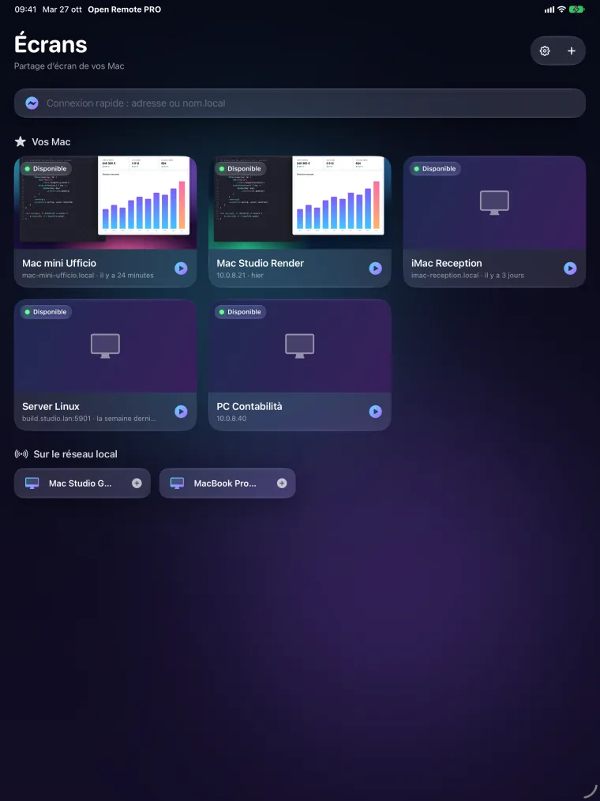
Contrôle, compatibilité, confidentialité
Un contrôle naturel
- Mode trackpad ou toucher direct, clic droit à deux doigts, zoom fluide en pinçant.
- Défilement précis avec inertie ; trois doigts pour faire défiler les pages.
- Barre avec esc, tab, flèches, F1–F12 et touches de modification ; raccourcis prêts à l'emploi (Mission Control, Spotlight, instantanés et plus).
- Presse-papiers partagé entre le Mac et votre appareil ; instantanés de l'écran à enregistrer ou à partager.
- Mode Observer pour regarder sans rien toucher.
PC et Linux aussi
- Serveurs VNC standard sous Windows et Linux.
- PC Windows via Bureau à distance (RDP) sur iPad et iPhone.
Android, bientôt sur Google Play
Sur téléphone, pliable et tablette Android : fluide jusqu'à 60 fps, jusqu'à 120 sur les écrans compatibles.
Confidentialité par conception
- Aucun compte, aucune publicité, aucun pistage.
- Les mots de passe et les clés restent dans le trousseau de votre appareil.
- L'app se connecte uniquement aux ordinateurs que vous indiquez.
En images
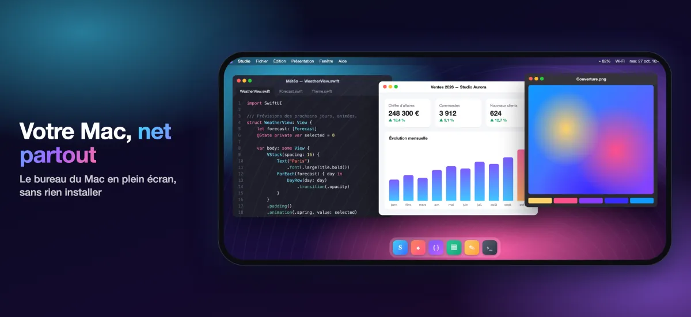
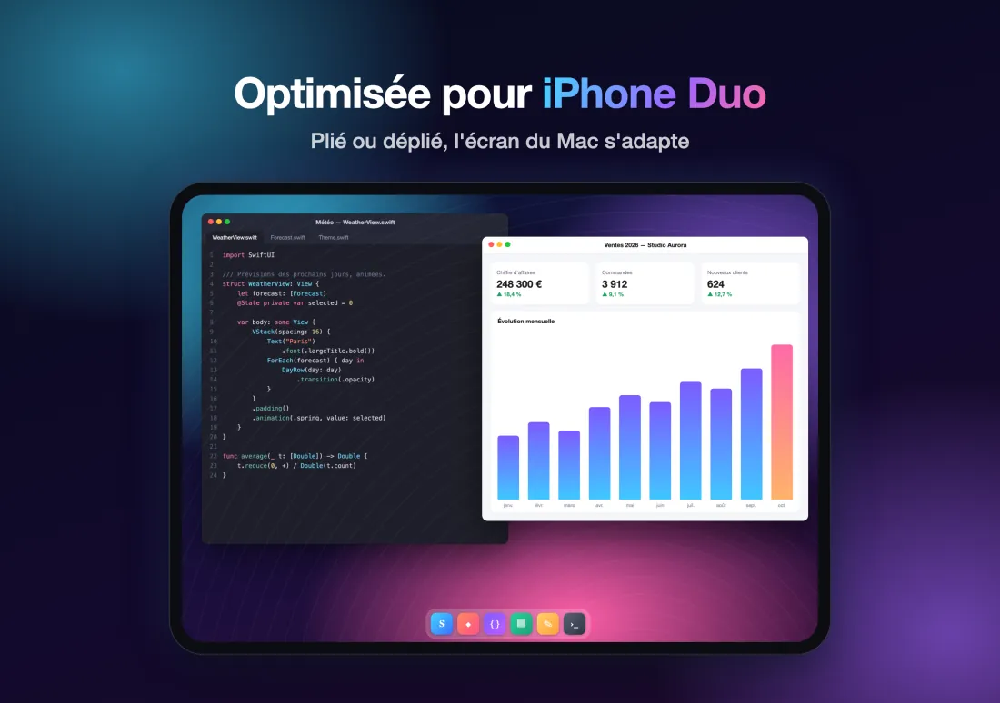
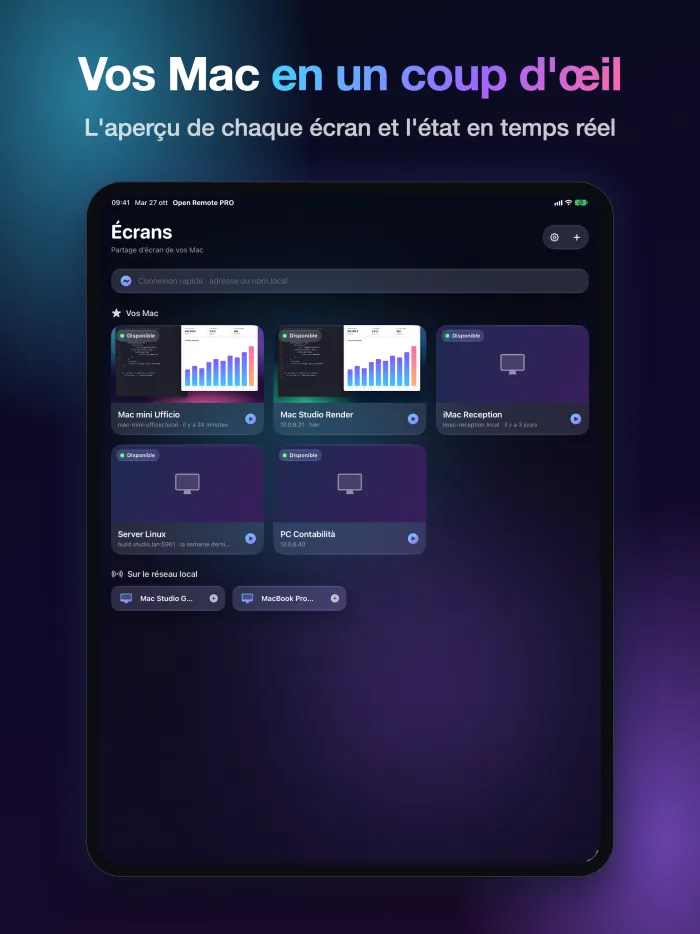
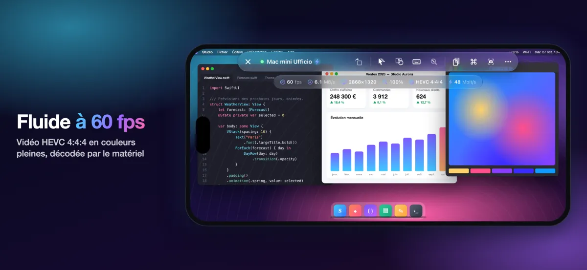
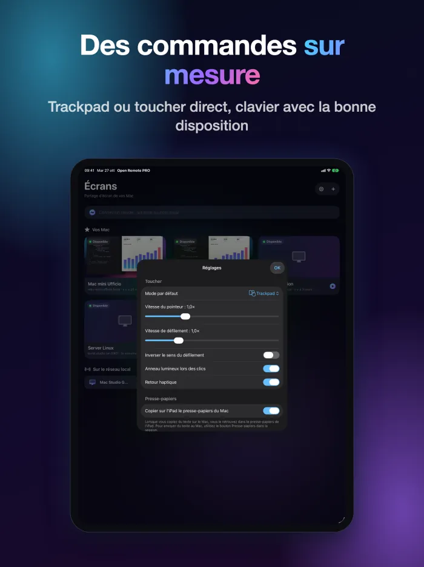
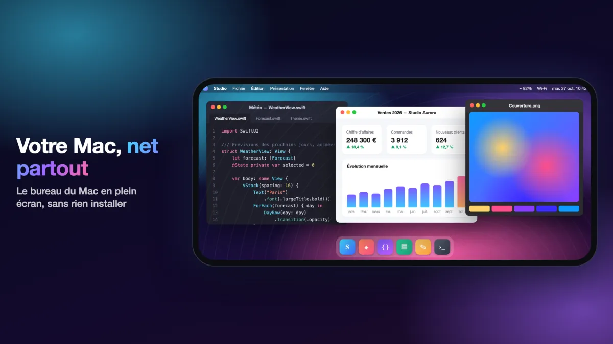
Un seul achat
4,99 €
Vous payez une seule fois, sur l'App Store.
Prix dans les pays de la zone euro ; ailleurs, le prix affiché par l'App Store s'applique.
Configuration requise
Pour la vidéo haute qualité, il faut un Mac avec puce Apple et macOS 14 ou ultérieur, avec le Partage d'écran activé (Réglages Système › Général › Partage). Les autres Mac et les serveurs VNC fonctionnent avec les encodages classiques. Hors de chez vous ou du bureau, utilisez un VPN.
Questions fréquentes
Que faut-il installer sur le Mac ?
Rien. Sur le Mac, ouvrez Réglages Système › Général › Partage et activez le Partage d'écran. Ajoutez ensuite le Mac dans l'app (sur le même réseau, il apparaît déjà dans la liste) et connectez-vous avec le nom et le mot de passe d'un utilisateur de ce Mac.
Que faut-il pour la vidéo haute qualité ?
Un Mac avec puce Apple et macOS 14 ou ultérieur. Les autres Mac et les serveurs VNC fonctionnent avec les encodages classiques.
Est-ce que ça marche hors de chez moi ?
Oui, avec un VPN vers le réseau du Mac. N'exposez pas le Partage d'écran directement sur Internet.
Est-ce compatible avec les PC Windows et Linux ?
Oui, avec les serveurs VNC standard sous Windows et Linux. Sur iPad et iPhone, vous vous connectez aussi aux PC Windows via Bureau à distance (RDP).
Quelles données l'app collecte-t-elle ?
Aucune : ni compte, ni publicité, ni pistage. La liste des ordinateurs, les mots de passe et les clés restent sur votre appareil, et l'app se connecte uniquement aux ordinateurs que vous indiquez.
Quand arrive-t-elle sur Android ?
L'app Android arrive bientôt sur Google Play, pour téléphones, pliables et tablettes.
D'autres réponses sur la page d'assistance (en anglais).